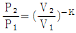
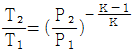
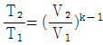
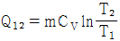
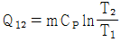
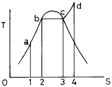
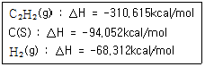

에너지관리산업기사 (2003-08-31 기출문제)
1과목: 열역학 및 연소관리
1. 석탄의 공업분석시 필수적으로 측정하는 항이 아닌 것은?
- 수분
- 황분
- 휘발분
- 회분
(정답률: 74%)

2. 석탄의 원소분석 방법과 관련이 없는 것은?
- 리비히법
- 세필드법
- 에쉬카법
- 라이드법
(정답률: 69%)
3. 중유의 분무 연소에 있어서 가장 적당한 기름방울의 평균 입경은?
- 1000∼2000μm
- 500∼1000μm
- 50∼100μm
- 10∼50μm
(정답률: 83%)
4. 석탄의 성분중에서 휘발분이 연소에 미치는 영향을 서술한 것이다. 틀린 것은?
- 착화가 용이하다.
- 연소속도가 빠르다.
- 불꽃이 짧게 된다.
- 검은 연기를 내기 쉽다.
(정답률: 61%)
5. 압력용기에 메탄가스 10kmol이 0℃, 5기압으로 저장되었다. 만약 이 용기로부터 1kmol의 가스를 빼낸 뒤 용기의 온도가 30℃가 되도록 한다면 이 때 용기의 압력은?
- 4.99 기압
- 4.51 기압
- 4.17 기압
- 3.30 기압
(정답률: 33%)
6. 천연가스가 순수 메탄으로 구성되었다고 가정할 때 1kg의 연료를 완전 연소시키는데 필요한 이론공기량(kg)은?(오류 신고가 접수된 문제입니다. 반드시 정답과 해설을 확인하시기 바랍니다.)
- 2.0
- 9.5
- 16.7
- 27.2
(정답률: 24%)
7. 프로판가스 1Nm3를 공기과잉계수 1.1의 공기로 완전연소시켰을 때의 습연소가스량은 몇 Nm3인가?
- 14.5
- 21.9
- 28.2
- 33.9
(정답률: 65%)
8. 중유가 석탄보다 발열량이 큰 근본 이유는?
- 회분이 적다.
- 수분이 적다.
- 연소속도가 크다.
- 수소분이 많다.
(정답률: 69%)
9. 연돌의 통풍력에 관한 다음 설명중 가장 부적절한 것은?
- 일반적으로 직경이 크면 통풍력도 크게 된다.
- 일반적으로 높이가 증가하면 통풍력도 증가한다.
- 연돌의 내면에 요철이 적은 쪽이 통풍력이 크다.
- 연돌의 벽에서 배기가스의 열방사가 많은 편이 통풍력이 크다.
(정답률: 60%)
10. 유압식과 기류식을 병합한 방법으로 무화시키는 버너는?
- 증발식 버너
- 회전분무식 버너
- 건타입 버너
- 초음파 버너
(정답률: 41%)
11. 일반적으로 고체연료는 액체연료에 비하여 어떠한가?
- H2의 함량이 크고, O2의 함량이 적다.
- N2의 함량이 크고, O2의 함량이 적다.
- O2의 함량이 크고, N2의 함량이 적다.
- O2의 함량이 크고, H2의 함량이 적다.
(정답률: 77%)
12. 보일러의 배출가스용 집진장치중 재나 매연의 입경이 비교적 크고 대용량의 설비에 적절한 것은?
- 멀티사이클론집진장치
- 코트렐집진기
- 여과집진장치
- 습식집진장치
(정답률: 65%)
13. 다음 집진장치 중에서 미립자집진에 가장 적합한 것은?
- 중력집진
- 관성력집진
- 원심력집진
- 전기집진
(정답률: 71%)
14. 다음 중 Nm3당 발열량이 가장 큰 것은?
- 메탄
- 천연가스
- 액화 석유가스
- 에탄
(정답률: 59%)
15. 황의 연소 반응식이 S + O2 → SO2 일 때, 이론 공기량(Nm3/kg)은?
- 1.88
- 2.38
- 2.88
- 3.33
(정답률: 66%)
16. 프로판(C3H8)의 연소 반응식이 "C3H8 + 5O2 → 3CO2 + 4H2O" 일 때 습연소가스량(Nm3/Nm3)은?
- 18.81
- 21.81
- 25.81
- 29.81
(정답률: 49%)
17. 다음 중 열관리 분야에 직접적 관련이 없는 것은?
- 연료의 검질, 저장, 수송
- 연료의 연소
- 폐열회수
- 설비의 감가상각
(정답률: 84%)
18. C 87%, h 12%, S 1%의 조성을 가진 중유 1kg을 연소시키는데 필요한 이론공기량은?
- 6.0[Nm3/kg]
- 8.5[Nm3/kg]
- 9.4[Nm3/kg]
- 11.0[Nm3/kg]
(정답률: 45%)
19. 화염의 발광특성을 이용하여 화염을 검출할 수 있는 계측 센서는?
- 황화카드뮴(CdS) 셀
- 바이메탈
- 플레임로드
- 스택스위치
(정답률: 62%)
20. 벙커 C유를 버너로 연소시켜 1800℃의 고온을 얻고자 할때 가장 적절한 방법은?
- 공기비를 크게하여 산소가 충분히 공급되도록 한다.
- 공기 대신 일부는 산소를 불어 준다.
- 공기비를 가급적 적게 한다.
- 폐열을 회수하여 공기를 예열한다.
(정답률: 49%)
2과목: 계측 및 에너지진단
21. 재생사이클에 대한 설명중 틀린 것은?
- 실제로 이상적인 재생 사이클을 적용 시키기 힘들다.
- 이상적인 재생 사이클의 터빈 출구건도는 낮은 편이다.
- 추기 재생 사이클은 터빈에서 팽창하는 일부의 증기를 추출하는 것이다.
- 혼합식 및 밀폐식 급수가열기에 대해 동일 갯수의 급수 펌프가 필요하다.
(정답률: 44%)
22. 어느 열역학적 계(system)가 외계(surroundings)로 부터 10kJ의 열을 받고 7kJ의 일(work)을 하였다면, 이 계의 에너지 증가는?
- -17kJ
- +3kJ
- -3kJ
- +17kJ
(정답률: 72%)
23. 다음 중 전체 일(W)를 면적으로 나타낼 수 있는 선도로서 가장 적합한 것은?
- T-S 선도
- P-V 선도
- h-S 선도
- T-V 선도
(정답률: 76%)
24. 오토 사이클에 대한 설명으로 틀린 것은?
- 일정 체적하에서 기체와 열을 전달한다.
- 압축 및 팽창은 등엔트로피 과정으로 이루어진다.
- 압축비가 클수록 열효율이 감소한다.
- 스파크 점화 내연기관의 기본 사이클이다.
(정답률: 76%)
25. 다음 사이클 중 효율이 가장 높은 것은?
- Otto 사이클
- Carnot 사이클
- Diesel 사이클
- Rankine 사이클
(정답률: 78%)
26. 430K에서 500kcal의 열을 공급받아 300K에서 방열시키는 카르노사이클의 열효율(%)와 일량(KJ)으로서 옳은 것은?
- 2.02%, 151KJ
- 30.2%, 632.3KJ
- 69.8%, 151KJ
- 69.8%, 632.3KJ
(정답률: 50%)
27. 이상기체의 동온 변화를 설명한 것으로 옳은 것은?
- 엔탈피변화가 없다.
- 엔트로피변화가 없다.
- 열이동이 없다.
- 외부에 대하여 일을 하지 못한다.
(정답률: 45%)
28. 다음 중 " Wt = -∫Vdp "가 성립되는 경우는? (단, Wt는 유동일, V는 체적)
- 정상류계, 정적과정
- 정상류계, 가역과정
- 밀폐계, 정적과정
- 밀폐계, 가역과정
(정답률: 57%)
29. 압력이 1ata, 체적은 2.5m3인 중량 3㎏의 공기를 6ata 까지 단열압축시키는데 필요한 일은? (단, 비열비는 1.4, 정적비열은 0.716kJ/kgㆍK이다.)
- 공기에 일이 11960㎏ㆍm 가해졌다.
- 공기에 일이 23960㎏ㆍm 가해졌다.
- 공기에 일이 32960㎏ㆍm 가해졌다.
- 공기에 일이 41750㎏ㆍm 가해졌다.
(정답률: 37%)
30. 카르노사이클에 있어서 열이 1200K에서 작업 유체로 전달되고 300K에서 방출된다. 1200K의 작업유체로 전달되는 열량은 100kJ/㎏이다. 이 사이클의 효율은?
- 0.75
- 0.25
- 0.52
- 0.97
(정답률: 46%)
31. 단열변화에서 P, V, T의 상관 관계식이 아닌 것은?(단, K = Cp/Cv)


- PVk = 일정

(정답률: 41%)
32. 15℃인 공기 4㎏이 정적하에서 100㎉의 열을 받는 경우의 엔트로피 증가량은 몇 ㎉/K인가?
- 0.281
- 0.361
- 0.436
- 0.478
(정답률: 33%)
33. 공기 표준 오토사이클에서 공급되는 열량은 어떤 식으로 표시되는가? (단, m은 질량, CV는 정적비열, CP는 정압비열, T는 온도)
- Q12 = mCV(T2-T1)
- Q12 = mCP(T2-T1)


(정답률: 28%)
34. 물질의 상변화와 관계있는 열량을 무엇이라 하는가?
- 잠열
- 비열
- 현열
- 반응열
(정답률: 82%)
35. T-S 선도에서 곡선 abcd가 정압선(P = const)일 때 증발열을 표시하는 면적은?

- ab21
- bc32
- abc31
- cd43
(정답률: 63%)
36. 어떤 가역 열기관이 400℃에서 1000kcal를 흡수하여 일을 생산하고 114℃에서 열을 발생한다. 이 과정에서 전체 엔트로피 변화는 몇 kcal/K인가?
- 1.29
- 1.04
- 1.0
- 0
(정답률: 52%)
37. 주어진 표준 연소열 데이터로 부터 계산한 아세틸렌(C2H2) 가스의 표준생성 엔탈피는? (단, 표준 연소열 데이터에 있어 H2는 액체 상태로 존재한다.)

- 54.20kcal/gㆍmol
- 148.25kcal/gㆍmol
- 94.87kcal/gㆍmol
- 123.17kcal/gㆍmol
(정답률: 33%)
38. 두개의 단열과정과 두개의 등온과정으로 이루어진 사이클은?
- 오토사이클
- 디젤사이클
- 카르노사이클
- 복합사이클
(정답률: 69%)
39. CO2(MW = 44) 0.4kmol이 150℃, 0.8ata일 때, 체적은 몇 m3인가?
- 15.72
- 16.68
- 17.94
- 18.87
(정답률: 35%)
40. 증기의 Mollier chart는 종축과 횡축을 무슨 양으로 표시하는가?
- 압력과 비체적
- 온도와 비체적
- 엔탈피와 엔트로피
- 온도와 엔트로피
(정답률: 66%)
3과목: 열설비구조 및 시공
41. 증유를 사용하는 로내의 온도를 일정하게 유지시키기 위한 제어량은?
- 노내의 압력
- 중유의 유출압력
- 중유의 유량
- 노내의 온도
(정답률: 59%)
42. 전기식 조절기에 대한 설명 중 틀린 것은?
- 배관이 힘들다.
- 계기를 움직이는 곳에 배선을 한다.
- 신호의 취급 및 변수간의 계산이 용이하다.
- 신호의 전달 지연이 거의 없다.
(정답률: 70%)
43. 보일러 출구의 배기가스를 측정하는 세라믹 O2계의 특징이 아닌 것은?
- 응답이 신속하다.
- 연속측정이 가능하다.
- 측정부의 온도유지를 위하여 온도조절용 히터가 필요하다.
- 분석하고자 하는 가스를 흡수용액에 흡수시켜, 전극으로 그 용액에서의 도전율의 변화를 측정하여 O2농도를 측정한다.
(정답률: 60%)
44. 피토 정압관(pitot static tube)은 어느 것을 측정할 때 사용하는가?
- 유동하고 있는 유체의 동압
- 유동하고 있는 유체의 정압
- 유동하고 있는 유체의 전압(全壓)
- 유동하고 있는 유체의 정압과 동압의 차
(정답률: 42%)
45. 다음 계측기중 고압측정용 압력계는?
- 부르돈관압력계
- 다이아프램압력계
- 벨로우즈압력계
- U자관압력계
(정답률: 78%)
46. -200°F는 몇 ℃인가?
- -128.9℃
- -93.2℃
- -111.8℃
- -168℃
(정답률: 52%)
47. 다음 중 진공계의 종류에 해당하지 않는 것은?
- 맥로이드(Mcloed)형 진공계
- 전리(電離) 진공계
- 열 전도형 진공계
- 음향식 진공계
(정답률: 55%)
48. 다음 중 보일러 연돌가스의 압력 측정용으로 원격 전송이 가능한 압력계는?
- 브르돈관식 압력계
- 분동식 압력계
- 링 밸런스식 압력계
- 다이어프램식 압력계
(정답률: 55%)
49. 보일러의 화염 온도를 측정하는데 가장 적합한 온도계는?
- 알코올온도계
- 광고온계
- 수은유리온도계
- 표면온도계
(정답률: 74%)
50. 링겔만 매연농도측정에 관한 다음 설명 중 틀린 것은?
- 굴뚝과 측정자와의 거리는 30~39m정도가 보편적이다.
- 매연 농도표는 측정자의 전방 16m 위치에 놓는다.
- 연돌에서 배출한 연기를 격자상의 농도표와 비교하여 측정한 농도를 0~5도까지 구분한다.
- 링겔만 차트는 각각 5%씩 흑색도가 다르다.
(정답률: 54%)
51. 오리피스에 의한 유량 측정에서 유량은 압력차와 어떤 관계인가?
- 압력차에 반비례
- 압력차에 비례
- 압력차의 평방근에 비례
- 압력차의 평방근에 반비례
(정답률: 57%)
52. 자동제어계의 동작 순서를 바르게 나열한 것은?
- 비교 → 판단 → 검출 → 조작
- 조작 → 비교 → 검출 → 판단
- 검출 → 비교 → 판단 → 조작
- 검출 → 판단 → 비교 → 조작
(정답률: 77%)
53. 전자유량계는 어떤 유체의 유량을 측정하는데 주로 쓰이는가?
- 순수한 물
- 과열된 증기
- 도전성 유체
- 비전도 유체
(정답률: 74%)
54. 더미스터(thermistor)에 관한 설명이다. 틀린 것은?
- 온도변화에 따라 저항치가 크게 변하는 반도체로 Ni, Co, Mn, Fe 및 Cu 등의 금속 산화물을 혼합하여 만든 것이다.
- 더미스터는 넓은 온도범위내에서 온도계수가 일정하다.
- 25℃에서 더미스터 온도계수는 약 -2∼6%/℃의 매우 큰 값으로서 백금선의 약 10배이다.
- 측정온도 범위는 -100∼300℃정도이며, 측온부를 작게 제작할 수 있어 시간 지연이 매우 적다.
(정답률: 43%)
55. 보일러의 제어중에서 A.C.C란 무엇의 약칭인가?
- 자동급수 제어
- 자동유입 제어
- 자동증기온도 제어
- 자동연소 제어
(정답률: 71%)
56. 다음 중 조절기 방식으로 적당치 못한 것은?
- 공기압식
- 전기식
- 유압식
- 자동제어식
(정답률: 60%)
57. 다음 중 유량계가 설치된 전ㆍ후에 직관부를 설치하여야 하는 유량계가 아닌 것은?
- 터빈식 유량계
- 차압식 유량계
- 델타 유량계
- 면적식 유량계
(정답률: 44%)
58. 부르돈관(Bourdon tube)에서 측정된 압력은 다음 중 어느것인가?
- 절대압력
- 게이지압력
- 진공압
- 대기압
(정답률: 82%)
59. 프로세스 제어의 난이정도를 표시하는 값으로 L(dead time)과 T(time Constant)의 비, 즉 L/T이 사용되는데 이 값이 작을 경우 어떠한가?
- P동작 조절기를 사용한다.
- PD동작 조절기를 사용한다.
- 제어가 쉽다.
- 제어가 어렵다.
(정답률: 74%)
60. 다음 중 압력식 온도계에 속하지 않는 것은?
- 고체 팽창식 온도계
- 액체압식 온도계
- 증기압식 온도계
- 기체압식 온도계
(정답률: 66%)
4과목: 열설비취급 및 안전관리
61. 노(爐)내에서 어떠한 경우에 휘염 방사가 일어나는가?
- 연소 가스에 탄산가스 및 수증기가 포함되어 고온일 때
- 탄화수소가 풍부한 가스를 공기공급을 불충분하게 하여 연소시킬 때
- 공기를 예열하여 가스의 유속을 크게할 때
- 연소가스에 공기량을 충분히 공급하여 완전 연소시킬 때
(정답률: 56%)
62. 마그네시아 및 돌로마이트질 노재의 성분인 MgO, CaO는 대기중의 수분 등과 결합하여, 열팽창의 차이에 의하여 노벽에 균열이 발생하거나 붕괴되는 현상이 나타나는데 이를 무엇이라 하는가?
- 열적 스폴링(thermal spalling)
- 소화성(slaking)
- 조직적 스폴링(structural spalling)
- 버스팅(bursting)
(정답률: 46%)
63. 로내의 온도가 900℃일 때 반사로에 있는 0.25m2의 문을 열면 얼마의 열량 손실(kcal/h)을 초래하는가? (단, 소재의 방사율 0.4, 실온 25℃이다.)
- 8200
- 9200
- 10200
- 11200
(정답률: 33%)
64. 증기배관의 구경을 정할 때 포화증기 수송관내 속도로 비교적 적정한 값은?
- 5m/s
- 15m/s
- 25m/s
- 50m/s
(정답률: 46%)
65. 시멘트 소성가마 중 회전가마에 있어서 냉각대(cooling zone)에 해당되는 대략적인 온도 범위는?
- 200∼650℃
- 820∼1380℃
- 110∼1600℃
- 650∼820℃
(정답률: 52%)
66. 다음 중 보일러의 청관제로서 사용할 수 없는 것은?
- 탄산칼슘
- 탄산나트륨
- 인산나트륨
- 히드라진
(정답률: 49%)
67. 내경 1m, 압력 10kg/cm2, 판의 허용 인장응력 9kg/mm2, η = 0.80 부식에 대한 정수 1mm의 보일러 두께는?
- 6.94mm
- 7.94mm
- 8.94mm
- 9.94mm
(정답률: 35%)
68. 다음 중 시멘트 원료 분말을 회전가마에서 배출되는 연소가스와 별도로 연료를 연소시킨 연소가스 중에 부유시키는 열교환 시멘트 소성용 가마는?
- 레폴 가마
- 선 가마
- SP 가마
- 새로운 SP가마(NSP)
(정답률: 54%)
69. 한국산업규격으로 규정하고 있는 가장 용도가 넓은 보통형 내화벽돌의 치수는? (단, 단위는 mm)
- 230 × 114 × 65
- 230 × 124 × 75
- 250 × 114 × 65
- 250 × 124 × 75
(정답률: 55%)
70. 다음 중 알루미나 시멘트를 원료로 사용하는 것은?
- 케스타블 내화물
- 플라스틱 내화물
- 내화몰탈
- 고알루미나질 내화물
(정답률: 61%)
71. 산소를 노속에 공급하여 불순물을 제거하고 강철을 제조하는 노는?
- 큐폴라
- 반사로
- 전로
- 고로
(정답률: 62%)
72. 다음에서 탄화실, 연소실, 축열실로 구성되어 있는 노는?
- LD 전로
- Coke 로
- 배소로
- 도가니로
(정답률: 50%)
73. 내경 600mm, 압력 8kg/cm2, 두께 10mm의 얇은 두께의 원통 실린더에 가스가 들어 있다면 원주응력은 몇 kg/mm2인가?
- 2.4
- 3.2
- 4.8
- 8.8
(정답률: 27%)
74. 다음의 보온재중 안전사용 온도가 제일 높은 것은?
- 규산칼슘
- 유리섬유
- 규조토
- 탄화마그네슘
(정답률: 57%)
75. 평행류 열교환기에서 가열 유체가 80℃로 들어가 50℃로 나오고, 가스가 10℃로부터 40℃로 가열된다. 열관류율이 25[kcal/m2h℃]일 때 시간당 7200kcal의 열교환율을 위한 열교환 면적(m2)은? (단, ln 7 = 1.94 임)
- 1.41
- 3.56
- 6.72
- 9.32
(정답률: 19%)
76. 염기성 슬래그와 접촉하는 부분에 사용하기 가장 적당한 벽돌은?
- 납석벽돌
- 샤모트 벽돌
- 마그네시아 벽돌
- 반규석 벽돌
(정답률: 63%)
77. 캐스터블 내화물에 대한 특성 설명 중 잘못된 것은?
- 현장에서 필요한 형상으로 성형 가능
- 접촉부없이 로체를 수축할 수 있음
- 잔존 수축이 크고 열팽창도 작음
- 내스폴링성이 작고 열전도율이 큼
(정답률: 56%)
78. 주로 점토 제품 등에 사용하는 연속식 가마(일명 Hoffman 식 가마)로서 인접하여 있는 각 소성실 가운데 있는 주연도를 통하여 굴뚝으로 연결되고 열효율은 좋지만 소성내의 온도분포가 균일치 못한 것이 결점인 이 가마는 어떠한 것인가?
- 고리 가마
- 도염식 가마
- 각 가마
- 터널 가마
(정답률: 53%)
79. 용해로, 소둔로, 소성로, 균열로의 분류 방식은?
- 조업방식
- 전열방식
- 사용목적
- 온도상승속도
(정답률: 66%)
80. SK34의 내화벽돌로 연소실을 축로할 때 내화몰탈은 어떤 것을 사용하는 것이 합리적인가?
- SK30 몰탈
- SK32 몰탈
- SK34 몰탈
- SK36 몰탈
(정답률: 60%)